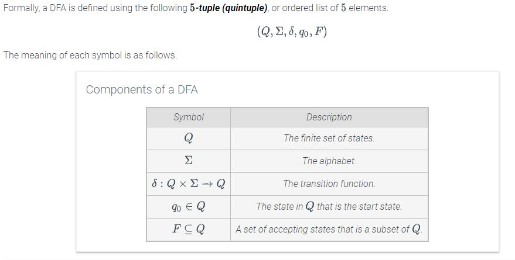
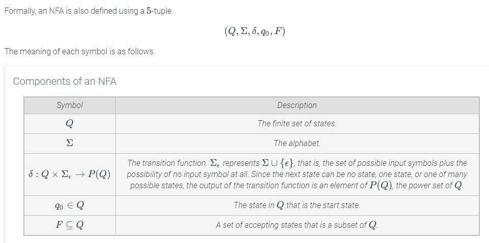
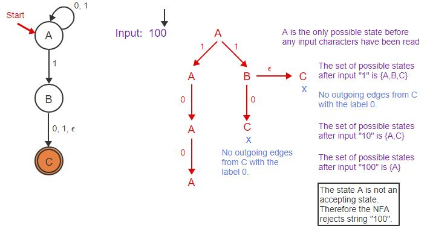

(3.13) Well-ordering principle Strong induction mathematical induction
(3.16) Recursive definition
- (u) is properly nested & uv is properly nested
- ( () ) is correct - (u)
- ( )( ) is correct - uv
(4.7) Permutation formulas
-
r-permutation =
A sequence of r items chosen from n total items in which the order of the items matters. -
Permutation =
A sequence of n items in which the order of the items matters and every item in a set is included exactly once. -
r-Subset / r-combination =
A sequence of r items chosen from n total items in which the order of the items does not matter.
(4.8) Identity for combinations
- Identity for combinations
In other words, "12 choose 8" "12 choose 4"
(4.10) Repeating permutations
- SEE EXAMPLE IN SECTION, MEMORIZE ALGORITHM
(4.13) Counting multisets rule
- Formula for counting a multiset (collection that can have multiple instances of the same kind of item):
Where n objects and m varieties (12 cookies, 4 possible flavors)
(4.18) Inclusion-exclusion principle
- 2 set -
- 3 set -
(4.19) Pascal's Triangle

(5.5) Inclusion-exclusion rule, probability
(5.8) Conditional probablity formula
- SEE NEXT PAGE
(5.9) Independent vs. dependent probability formula
- SEE NEXT PAGE
(5.10) Baye's theorem
- SEE NEXT PAGE
(6.4) Components of DFA

(6.10) Components of NFA

(6.14) NFA outcomes
